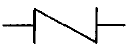

판금제관기능장 (2002-04-07 기출문제)
1과목: 임의 구분
1. 다음은 강재의 변형을 수정하는 기구들이다. 변형수정에 사용되지 않는 것은 ?
- 로울 마아크(Roll mark)
- 짐크로우(Jim crow)
- 조정나사
- 변형수정 블록
(정답률: 67%)

2. 구리, 납과 같이 연한 금속을 정으로 절단할 때 적당한 정날의 각도는 ?
- 25 - 30°
- 45 - 50°
- 55 - 60°
- 65 - 70°
(정답률: 60%)
3. 판금 제품에 강인성을 증가시키고 둥근홈을 만들어 제품을 아름답게 만드는 기계는 ?
- 비딩 머신
- 포밍 머신
- 폴딩 머신
- 갱 슬리터
(정답률: 74%)
4. 플랜지(flange)가 있는 판을 주름을 만들지 않고 또 표면에 흠이 없게 정확한 원모양으로 구부리는 기계는 무엇인가 ?
- 터닝 롤(turning roll)
- 앵글 벤더(angle bender)
- 벤딩 롤링 머신(bending rolling machine)
- 탄젠트 벤더(tangent bender)
(정답률: 67%)
5. 다음 중 전단가공 방식이 아닌 것은 ?
- 피어싱(piercing)
- 블랭킹(blanking)
- 세이빙(shaving)
- 벌징(bulging)
(정답률: 60%)
6. 족답식 직각 전단기로써 전단시 전단힘을 줄일 수 있도록한 전단각(shear angle)은 ?
- 9 - 12°
- 6 - 9°
- 3 - 6°
- 12 - 15°
(정답률: 70%)
7. 판재의 굽힘방향이 한 방향일 때 압연방향과 어떤 관계가 되도록 굽히는 것이 좋은가 ?
- 압연방향과 45°
- 압연방향과 60°
- 압연방향과 평행
- 압연방향과 직각
(정답률: 85%)
8. 재료를 굽힘작업 할 때 중립면의 위치는 굽힘부분의 반지름 R가 재료 두께의 몇 배이상일 때 중립면이 중앙에 오는가 ?
- 4배
- 5배
- 6배
- 7배
(정답률: 78%)
9. 스프링 백(spring back)에 대한 설명 중 틀린것은 ?
- 스프링 백은 재질, 굽힘정도, 판두께 등과 밀접한 관계가 있다.
- 스프링 백의 양을 감소시키기 위하여 풀림하거나 연질재료를 사용한다.
- 스프링 백의 양은 굽힘선의 길이와 비례한다.
- 스프링 백은 탄성한계 및 강도가 높을수록 스프링 백의 양은 작아진다.
(정답률: 알수없음)
10. 두께 4.5mm의 강판에 1변이 30mm되는 사각구멍을 뚫으려면 펀치에 몇 kgf의 힘을 가하면 되는가 ? (단, 이 강판은 전단응력이 35kgf/mm2를 넘으면 전단된다고 한다.)
- 1.32× 103
- 1.32× 104
- 18.9× 103
- 1.98× 103
(정답률: 34%)
11. 다음 클리어런스(틈)의 크기에 관한 설명중 잘못된것은 ?
- 일감이 같은 소재일 때는 클리어런스를 크게 잡을수록 뽑기 압력은 작아도 된다.
- 제품의 정도를 향상시키기 위해서는 클리어런스를 크게 하는 것이 좋다
- 날끝마모를 억제하고자 할 때는 클리어런스를 크게 잡아 두는 것이 좋다.
- 스트리퍼(stripper)의 압력을 작게하기 위해서는 클리어린스를 크게하는 것이 좋다.
(정답률: 50%)
12. 프레스의 램하면에 접촉되게 설치하는 판을 말하며 윗면에 생크(shank)가 부착되는 것은 ?
- 패킹 플레이트(packing plate)
- 녹 아웃(knock out)
- 펀치 홀더(punch holder)
- 스토퍼(stopper)
(정답률: 46%)
13. 경판을 프레스로 가공하려고 할 때의 설명 중 잘못된 것은 ?
- 경판 곡선부의 반지름 방향 허용공차는 3% 이하로 제한한다.
- 소재와 다이 접촉부와의 길이는 판두께의 3배 이하로 한다.
- 가공 후 경판의 끝부분은 판두께가 증가한다.
- 드로잉비는 강판의 경우 보통 1.3 - 2.0이다.
(정답률: 53%)
14. 리벳 구멍사이의 판재가 절단될 경우 인장하중을 나타내는 식은 ? (단, W:인장하중(kgf), P:리벳의 피치(㎝), d:리벳지름(㎝), t:강판의 두께(㎝), σt : 강판의 인장응력(kgf/cm2))
- W = (P-d)tσt
- W = (P+d)tσt
- W = (P-2d)tσt
- W = (P+2d)tσt
(정답률: 62%)
15. 두께 15mm의 판재를 양쪽 덮개판 맞대기 이음하려고 한다. 스트랩(strap)의 두께는 모재 두께의 70%로 하려고 할 때 적당한 리벳길이는 대략 몇 mm인가 ?
- 38
- 48
- 58
- 68
(정답률: 64%)
16. 압력용기를 리벳으로 이음하였다. 이 때 판재면 사이로 증기가 새는 것을 방지하기 위하여 사용하는 공구는 ?
- 코킹 정
- 캡 정
- 홈 정
- 평 정
(정답률: 67%)
17. 보일러의 리벳이음에서 세로이음에 대한 설명으로 틀린 것은 ?
- 한쪽 덮개판 이음(Strapped Joint)으로 하지 않는다.
- 안지름이 1000mm을 초과할 때는 겹치기 이음 (Lap Joint)으로 하지 않는다.
- 세로이음의 강도는 원주방향 강도의 50% 이상이 필요하다.
- 안지름이 1000mm이하이고, 최고사용 압력이 7kgf/cm2을 초과할 때는 겹치기 이음으로 하지 않는다.
(정답률: 64%)
18. 다음 중 전기저항 용접이 아닌 것은 ?
- 심 용접
- 점 용접
- 플래시 용접
- 일렉트로 슬래그 용접
(정답률: 64%)
19. 프로젝션 용접(projection welding)의 요구조건으로 틀린 것은 ?
- 프로젝션은 전류가 통하기 전의 가압력에 견딜 수 있을 것
- 성형시 일부에 전단 부분이 생기지 않을 것
- 상대 판이 충분히 가열되면 녹을 것
- 성형에 의한 변형이 없어야 하며 용접후 양면의 밀착이 양호할 것
(정답률: 54%)
20. 수동 아크 용접기에서 부하전류의 증가와 더불어 단자전압이 저하하는 특성은 ?
- 상승 특성
- 정전압 특성
- 정전류 특성
- 수하 특성
(정답률: 54%)
2과목: 임의 구분
21. 아세틸렌 가스의 자연발화 온도를 가장 알맞게 나타낸 것은 ?
- 103 - 107℃
- 250 - 255℃
- 406 - 408℃
- 5⑤ - 515℃
(정답률: 85%)
22. 파이프 속을 흐르는 유체의 종류를 나타내는 기호 중 2차 냉매를 나타내는 기호는 ?
- G
- CH
- R
- B
(정답률: 72%)
23. 보일러 및 압력 용기용 압연강판을 나타내는 것은 ?
- SWS
- SB
- SPP
- STS
(정답률: 77%)
24. 강관을 사용하여 동심 T(Tee) 분기관을 전개법에 의해 제작하려고 한다. 가장 적합한 전개방식은 ?
- 삼각형 전개법
- 평행선 전개법
- 방사선 전개법
- 사다리 전개법
(정답률: 70%)
25. 금속재료가 소성변형에 의하여 단단하게 경화되는 현상은 ?
- 담금질 경화
- 가공 경화
- 풀림 경화
- 시효 경화
(정답률: 79%)
26. 양은 이라고 하는 양백판(german silver)의 주성분이 아닌 것은 ?
- 구리(Cu)
- 아연(Zn)
- 망간(Mn)
- 니켈(Ni)
(정답률: 50%)
27. 쌍정에 의한 변형은 어떤 것에 의하여 형성되는가 ?
- 전단적인 이동에 의하여
- 미끄럼적인 이동에 의하여
- 탄성적인 이동에 의하여
- 집단 슬립의 이동에 의하여
(정답률: 75%)
28. 외경이 쫑53, 길이 4m의 강관이 20℃에서 설치되었으나 액체가 흐름에 따라 80℃로 상승하였다. 열에 의한 신장량을 구하면 ? (단, 열팽창계수는 α = 2 × 10-5 deg-1 로 한다.)
- 0.24mm
- 0.48mm
- 2.4mm
- 4.8mm
(정답률: 28%)
29. 인발작업에서 지름 5.5mm의 와이어를 인발하여 지름 4mm로 하였을 때 단면 감소율은 ?
- 약 27%
- 약 37%
- 약 47%
- 약 73%
(정답률: 45%)
30. 피니싱 온도(finishing temperature)는 무엇이 끝나는 온도인가?
- 재결정
- 열처리
- 냉간 가공
- 열간 가공
(정답률: 62%)
31. 다음 그림이 나타내는 밸브는 ?

- 글로브 밸브
- 게이트 밸브
- 체크 밸브
- 버터플라이 밸브
(정답률: 92%)
32. 제관제품을 용접하여 조립하면 수축과 변형이 발생되는데 용접시공방법 중 변형을 억제하는법으로 틀린 것은 ?
- 맞대기 용접부보다 필릿 용접부를 먼저 용접한다.
- 용접을 중앙부터 시작하여 밖을 향해 진행한다.
- 이음의 용입을 될수록 작게하고 맞춤의 이가 잘 맞도록 한다.
- 단면의 중심선 양쪽에 균형있는 용착을 시킨다.
(정답률: 85%)
33. 판재나 제관제품이 용접 또는 다른 가공에 의해 변형이 생겼을 경우에 가스불꽃으로 가열 후 물로 급냉하여 변형을 교정하는 방법은 ?
- 도열법
- 점열급냉법
- 피이닝법
- 역변형법
(정답률: 90%)
34. X선 투과 검사시 검출되는 결함과 필름에 나타나는 것으로 잘못 연결된 것은 ?
- 기공 - 백색 둥근점
- 스패터 - 백색 둥근점
- 언더컷 - 가늘고 긴 검은선
- 용입부족 - 검은 직선
(정답률: 79%)
35. 다음 중 산업재해의 인적 요인으로 옳지 않은 것은?
- 위험물의 취급 부주의
- 복장, 보호구의 결함
- 안전장치의 기능제거
- 불안전한 속도조작
(정답률: 74%)
36. T.T.T 곡선과 관계가 있는 것은 어느 곡선인가 ?
- Fe3 -C 곡선
- 탄성 곡선
- 항온 변태 곡선
- 인장 피로 곡선
(정답률: 60%)
37. 담금질 조직으로 경도가 가장 큰 것은 ?
- 오스테나이트
- 마르텐사이트
- 소르바이트
- 퍼얼라이트
(정답률: 80%)
38. 다음 중 플라이휠(fly wheel)을 설치하지않는 프레스는 ?
- 크랭크 프레스(Crank press)
- 토글 프레스(Toggle press)
- 프레스 브레이크(Press brake)
- 유압 프레스(Hydraulic press)
(정답률: 65%)
39. 다음 중 크랭크 프레스의 능력이 아닌 것은 ?
- 회전 능력
- 일 능력
- 압력 능력
- 토크 능력
(정답률: 62%)
40. 재료의 폭 300mm,두께 3mm의 연강판(인장강도=40kgf/mm2)을 다이(die)의 견폭(肩幅,다이의 홈폭)이 재료두께의 8배 일때의 V 굽힘 압력을 계산하면 몇 kgf인가 ? (단, V형 다이의 견폭 계수 K1 값은 1.33으로 한다.)
- 1995
- 5985
- 17955
- 47880
(정답률: 알수없음)
3과목: 임의 구분
41. 지름 100mm의 소재를 드오잉하여 지름 60mm의 원통을 만들었다. 이 때 드오잉률은 얼마인가 ? 또 이 60mm 지름의 용기를 재 드로잉률 0.8을 써서 재 드로잉하면 재 드로잉 후의 용기의 지름은 얼마인가 ?
- 드로잉률 0.3, 재드로잉 지름 56mm
- 드로잉률 0.6, 재드로잉 지름 48mm
- 드로잉률 1.2, 재드로잉 지름 60mm
- 드로잉률 0.3, 재드로잉 지름 100mm
(정답률: 70%)
42. 판금 가공중 드로잉(Drawing)가공법은 ?
- 코이닝(coining)
- 커핑(cupping)
- 스웨이징(swaging)
- 사이징(sizing)
(정답률: 37%)
43. 소재의 두께를 변화시키지 않고 상하형이 서로 반대되는 다이 사이에 넣어 판재를 요철(凹凸)모양으로 성형하는 것은 다음 중 어느 것인가 ?
- 엠보싱(embossing)
- 코이닝(coining)
- 업세팅(upsetting)
- 벌징(bulging)
(정답률: 62%)
44. 판금 재료 중 Ni-Cr계 합금으로서 내식성이 강하며, 표면이 아름다운 은백색인 것은 ?
- 아연도금 강판
- 주석도금 강판
- 구리도금 강판
- 스테인리스 강판
(정답률: 67%)
45. 판의 두께 16mm, 리벳의 지름 16mm, 리벳구멍의 지름 17mm, 피치 64mm인 1줄 겹치기 리벳이음에서 1피치마다 1500kgf의 하중이 작용할 때 판의 효율은 어느 것인가 ?
- 25%
- 26.6%
- 73.4%
- 75%
(정답률: 50%)
46. 제 1 각법에서 정면도 아래에는 어느 것이 위치하게 되는가 ?
- 저면도
- 측면도
- 평면도
- 배면도
(정답률: 44%)
47. 투상도법의 제원칙과 거리가 먼 내용은 ?
- 일반적으로 투상법은 제3각법으로 작도함을 원칙으로 한다.
- 단면은 기본 중심선에서 절단한 면으로서 표시 하는 것을 원칙으로 한다.
- 일부가 특정한 형태로 되어 있는것(키이 홈을 가지는 보스 등)은 그부분이 그림의 위쪽에 나타나게 그린다.
- 축, 핀, 리벳 등은 길이 방향으로 절단하는 것을 원칙으로 한다.
(정답률: 67%)
48. 판뜨기 전개에서 판두께의 중립선의 위치 설정에 대한 설명이다. 옳은 것은 ?
- 원통과 같이 평면도가 곡선으로 그려지는 것은 판두께의 바깥지름에서 잡는다.
- 원뿔과 같이 평면도가 곡선으로 그려지는 것은 판두께의 중심에서 잡는다.
- 각통과 같이 모가 나게 굽혀진 곳이 있는 것은 판두께의 바깥쪽에서 잡는다.
- 각뿔과 같이 모가 나게 굽혀진 곳이 있는 것은 판두께의 중심에서 잡는다.
(정답률: 74%)
49. 평행 전개법을 사용하여 판뜨기 전개도를 그리는 것이 가장 적합한 것은 ?
- 관통 구멍이 있는 원통
- 원뿔 2편의 직각 엘보우
- 원통으로 잘라낸 경사원뿔
- 경사원뿔대의 2축이 만나는 관
(정답률: 54%)
50. 밑부분은 원형이고 윗부분은 정사각형인 환기통을 전개하고자 한다. 어떤 전개방법을 쓰면 좋은가 ?
- 평행선법
- 삼각형법
- 직교좌표법
- 혼합법
(정답률: 69%)
51. 판금 가공용 판재가 될 수 없는 것은 ?
- 주철판
- 연강판
- 스테인리스강판
- 알루미늄 합금판
(정답률: 75%)
52. 판금 가공용 재료의 구비할 조건이 될 수 없는 것은 ?
- 전연성이 풍부할 것
- 항복점이 낮을 것
- 탄성이 풍부할 것
- 소성이 풍부할 것
(정답률: 59%)
53. 다음 중 용융 아연도금 강판 기호로 맞는 것은 ?
- SBC
- HRS
- SSP
- SGHC
(정답률: 59%)
54. 철강 재료에 포함되어 있는 철의 5대 원소는 ?
- C, Si, P, Mn, O
- C, P, N, Cu, S
- C, N, Mn, Si, P
- C, Si, Mn, P, S
(정답률: 75%)
55. 도수분포표에서 도수가 최대인 곳의 대표치를 말하는 것은?
- 중위수
- 비 대칭도
- 모우드(mode)
- 첨도
(정답률: 47%)
56. 일정통제를 할 때 1일당 그 작업을 단축하는데 소요되는 비용의 증가를 의미하는 것은?
- 비용구배(Cost slope)
- 정상 소요시간(Normal duration)
- 비용견적(Cost estimation)
- 총비용(Total cost)
(정답률: 56%)
57. 서블릭(therblig)기호는 어떤 분석에 주로 이용되는가?
- 연합작업분석
- 공정분석
- 동작분석
- 작업분석
(정답률: 64%)
58. 관리도에서 점이 관리한계내에 있고 중심선 한쪽에 연속해서 나타나는 점을 무엇이라 하는가?
- 경향
- 주기
- 런
- 산포
(정답률: 64%)
59. 모집단의 참값과 측정 데이터의 차를 무엇이라 하는가?
- 오차
- 신뢰성
- 정밀도
- 정확도
(정답률: 82%)
60. 준비작업시간이 5분, 정미작업시간이 20분, lot수 5, 주작업에 대한 여유율이 0.2라면 가공시간은?
- 150분
- 145분
- 125분
- 1⑤분
(정답률: 65%)